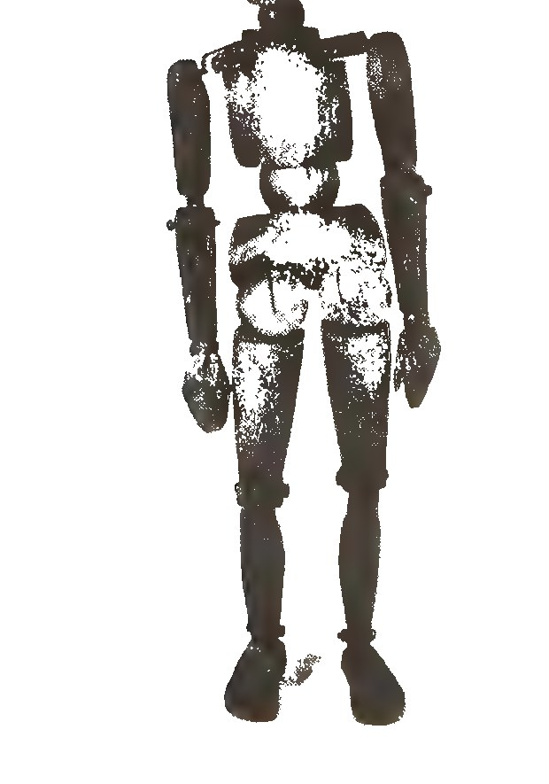

Chương 11 — Chấn Thương: Vai Trò Của Tai Nạn
Khi Cơ Thể Nghiêng
Một câu hỏi tôi luôn hỏi khách hàng là họ có từng bị gãy xương, tai nạn nghiêm trọng, phẫu thuật, hoặc bất kỳ nguyên nhân nào khác phải nhập viện hay không. Một điều khác tôi luôn làm là nhìn thẳng vào người đó để xem họ có nghiêng sang một bên hay không. Đôi khi tôi yêu cầu người đó đi lại, để xem có dấu hiệu khập khễnh nào không. Cả câu hỏi lẫn quan sát đều nhắm đến cùng một mục tiêu: xác định xem đã có chấn thương nào chưa.
Những tác động dần dần của phản xạ Đèn Đỏ và phản xạ Đèn Xanh đã thành thói quen lên cơ thể dễ thấy nhất từ bên hông: tức là lưng cong và bụng nhô ra của tư thế cung tên, hoặc phần thân trên khom của ông lão. Nhưng những tác động đột ngột của chấn thương lại dễ thấy nhất khi nhìn thẳng từ phía trước hoặc phía sau: tức là sự nghiêng ngang của thân mình. Stress kéo dài ảnh hưởng đến cơ thể ở cả hai bên như nhau, nhưng nó không gây nghiêng. Nhưng chấn thương chỉ ảnh hưởng đến cơ thể ở phía xảy ra tai nạn, khiến các cơ co giật và cong cơ thể về một bên.
Phản xạ chấn thương là một phản ứng của hệ thống cảm giác–vận động nhằm phòng vệ trước cơn đau. Đó là một phản xạ bảo vệ phổ biến, quen thuộc rõ rệt như tư thế nín thở của phản xạ Đèn Đỏ hay cái lưng uốn cong của phản xạ Đèn Xanh. Khi chúng ta bị ong đốt hoặc bị kim tiêm châm, ta giật mình—đó là phản xạ chấn thương. Nếu ai đó cầm điếu thuốc đang cháy hoặc pháo hoa lại quá gần ta, ta đưa bộ phận cơ thể bị đe dọa ra xa khỏi nguy hiểm và co người lại—đó là phản xạ chấn thương. Nếu cơ thể ta bị thương, sự co người của cơ nhằm giữ một khuôn mẫu bảo vệ chặt chẽ quanh điểm bị thương—đó cũng là phản xạ chấn thương.
Những loại phản xạ chấn thương này có thể xảy ra ở bất kỳ bộ phận nào của cơ thể—trên hoặc dưới, trước hoặc sau, bên trái hoặc bên phải. Chúng có thể xảy ra ở phía trước cơ thể, cộng thêm vào tư thế co cụm của phản xạ Đèn Đỏ, như đôi khi xảy ra sau phẫu thuật tim. Chúng có thể xảy ra ở phía sau cơ thể, cộng thêm vào cái lưng cong căng của phản xạ Đèn Xanh, như đôi khi xảy ra sau phẫu thuật cột sống. Nhưng trừ khi tai nạn nằm ở trung tâm cơ thể, sự co co giật của phản xạ chấn thương sẽ hiện rõ nhất ở một bên cơ thể, thường ảnh hưởng đến sự êm ái của bước đi và cảm giác thăng bằng.
Khi có vẹo cột sống, điều đó có nghĩa là đã xảy ra chấn thương. Các bác sĩ chỉnh hình thường bỏ qua chấn thương như một yếu tố trong bệnh vẹo cột sống của trẻ, đôi khi đưa ra giả thuyết kỳ lạ rằng nguyên nhân là di truyền, rằng một bên cơ thể phát triển nhanh hơn bên kia! Trong một tỷ lệ nhỏ xíu của các trường hợp, điều này thực sự có thể xảy ra, nhưng nói chung những dị tật di truyền như vậy xảy ra cùng với các dấu hiệu dị tật khác—điều hiếm khi xảy ra với vẹo cột sống.
Vẹo cột sống có thể là một đường cong đơn giản như một chữ C dài, hoặc có thể là một đường cong kép như chữ S (Hình 24a và 24b). Trong trường hợp sau, cột sống dưới cong theo một hướng và cột sống ngực cong theo hướng ngược lại. Nguồn gốc của điều này thường luôn là như sau: Một tai nạn xảy ra ở một bên cơ thể, khiến các cơ của xương chậu và cột sống thắt lưng co chặt hơn ở một bên, nhưng phản xạ dựng lại thẳng của hệ thống thăng bằng tự động kéo đầu và thân trên về hướng ngược lại để cân bằng sự nghiêng dưới. Trong Hình 24a và 24b, bạn thấy tác động của sự co cơ phản xạ mà người đó đã mất kiểm soát; tức là chứng quên cảm giác–vận động (SMA) đã xảy ra. Dù đường cong là đơn giản hay hình chữ S, nguyên nhân thường vẫn là như nhau: chấn thương ở một bên cơ thể, gây co cơ phản xạ.

Hình 24a: Vẹo cột sống đơn giản với đường cong hình chữ C

Hình 24b: Vẹo cột sống với đường cong hình chữ S
Phản xạ chấn thương có thể được kích hoạt bởi bất kỳ tổn thương nghiêm trọng nào đến cơ thể. Trong các bệnh án của Phần 1, Barney, người nghiêng hẳn sang phải, đã gãy đùi trái trong một tai nạn ô tô ba năm trước; vai phải “đông cứng” của Louise và
sự nghiêng sang phải đã xảy ra sau khi cô ngã và gãy xương cánh tay trên; Harley đã ngã từ xe tải, làm thương gối trái. Sau đó anh khập khễnh, nghiêng sang trái.
Phản xạ chấn thương có thể được kích hoạt bởi phẫu thuật: Một phản ứng co giật co cụm sẽ xảy ra ở các cơ quanh vị trí phẫu thuật. Phụ nữ cắt bỏ vú có thể bị cứng và đau nhức mạn tính ở vai và phần trên của lồng ngực. Đàn ông phẫu thuật tim có thể bị đau nhức căng ở ngực. Người phẫu thuật thận và đặt ống thông đôi khi bị co thắt cơ không kiểm soát được ở bụng dưới và đùi trên, nơi đặt ống thông. Những ví dụ dạng này thì vô kể.
Cũng thường gặp không kém là các phản xạ chấn thương ở một bên cơ thể sau một cú ngã mạnh vào hông, hoặc sau khi trẹo chân hoặc gãy chân. Việc không thể đặt trọng lượng lên chân bị thương gây ra sự dồn trọng lượng tự động sang chân kia. Đây không phải là một hành động tự nguyện; đó là một phản xạ để tránh cơn đau. Người ta không thể không “chiều chuộng” chân bị thương. Thợ may cũng như bác sĩ chỉnh hình thường nói với khách hàng rằng một chân của họ ngắn hơn chân kia. Trong hàng trăm người được nói như vậy, tôi chưa từng gặp một người nào mà chân thực sự ngắn hơn; trong mọi trường hợp, các cơ ở trung tâm cơ thể bị co mạn tính, kéo hông lên ở bên đó—giống như “bộ hạ cánh bị co lại” của Harley. Có nhiều loại phản xạ chấn thương cũng như có nhiều cách con người làm mình bị thương, từ thô bạo đến tinh vi, từ một cú vặn cổ kiểu roi ngựa đến một căn bệnh gây liệt.
Sự bất cân xứng giữa hai bên phổ biến đến mức chúng ta thấy nó liên tục nhưng không nhận ra. Thực tế, cột sống cong đến mức “bình thường” nên ít bác sĩ nhận ra rằng những người bị nghiêng sang một bên do tai nạn sẽ có nguy cơ chèn ép một hoặc cả hai dây thần kinh tọa nếu lưng dưới của họ bị cong dần thêm bởi phản xạ Đèn Xanh.
Đau tọa do áp lực của đĩa đệm lên các dây thần kinh tọa nằm ngay giữa đốt sống thắt lưng thứ tư và thứ năm và giữa đốt sống thắt lưng thứ năm và đốt sống cùng thứ nhất. Chúng là các dây thần kinh cảm giác, kéo dài qua xương chậu, xuống đùi và bắp chân, kết thúc ở bàn chân. Dây thứ nhất đi xuống bên cạnh chân, kết thúc ở ngón chân cái; dây thứ hai đi xuống phía sau chân tới gót chân, kết thúc ở ngón chân út. Dây thần kinh nào bị chèn, cơn đau sẽ cảm nhận theo đường đó. Nếu sự chèn vừa phải, cơn đau chỉ cảm nhận ở xương chậu và hông. Nếu áp lực nặng, cơn đau như một sợi dây nóng chạy suốt xuống đến bàn chân. Đó là một cơn đau thần kinh với cảm giác khác với đau cơ, và nó có thể gây suy nhược đau đớn khi nặng.
Ngoại trừ những trường hợp rõ ràng của tai nạn nghiêm trọng và gãy ép, đau tọa là một bệnh thích nghi tương đối phổ biến. Giống như mọi bệnh của sự thích nghi, nó liên quan trực tiếp đến lượng stress và chấn thương đã xảy ra trong cuộc đời của người đó. Chúng ta sống càng lâu, càng có nhiều cơ hội trải qua stress và chấn thương; vì thế, đau tọa thường được liên với các bệnh của lão hóa. Nhưng nó có thể xảy ra ở bất kỳ tuổi nào. Và với tư cách là một bệnh của sự thích nghi, đau tọa có thể
được tránh hoặc khắc phục. Việc dạy người ta cách tránh hoặc thoát khỏi tình trạng đau tọa đã là một trong những khía cạnh thú vị hơn trong công việc của tôi với tư cách là một người giáo dục somatic. Tôi thường được tìm đến bởi những người bị đau tọa nặng, những người muốn tránh phẫu thuật bằng mọi giá.
Một người thợ làm bánh ở tuổi đầu bốn mươi khập khễnh bước vào văn phòng tôi với những cơn đau tọa dữ dội chạy xuống chân trái tới ngón chân cái. Anh sợ cơn đau, nhưng còn sợ hơn là ca phẫu thuật lưng được coi là “cần thiết.” Sau vài buổi, anh lấy lại được cảm giác và sự kiểm soát vận động của các cơ thắt lưng và thân trái. Cơn đau sau đó biến mất, đầu tiên ở chân, rồi ở lưng. Đĩa đệm liên đốt sống được cho là “vỡ” hóa ra chỉ bị phình ra do áp lực như kẹp của sự co không tự nguyện ở các cơ lưng dưới. Với các sự co giờ nằm dưới sự kiểm soát tự nguyện của anh, các đốt sống trở về vị trí bình thường. Để mãi mãi kỷ niệm việc lưng mình hoàn toàn lành lặn, giờ anh làm một màn trình diễn lớn khi nâng những bao bột nặng 100 pound để đổ vào máy trộn bột. Anh đã làm việc đó được ba năm.
Trong một trường hợp khác, tôi làm việc với một cao bồi đã phải rút khỏi các cuộc thi rodeo vì đau tọa mạn tính. Mười ngày sau buổi cuối cùng trong ba buổi huấn luyện lại của chúng tôi, anh đã có mặt tại Cow Palace của San Francisco, thuần ngựa và cưỡi bò tại cuộc thi Grand National.
Chính khả năng gần như kỳ diệu của ý thức con người và hệ thần kinh trung ương trong việc học hỏi và thích nghi là chủ đề của cuốn sách này. Chúng ta có khả năng vượt xa những gì ta nghĩ về mình. Khi chúng ta tìm hiểu ngày càng nhiều về cách các chức năng của não kiểm soát, duy trì, sửa chữa và bảo vệ cơ thể ta, ta càng thêm trân trọng khả năng kỳ diệu này. Chúng ta ít phụ thuộc và ít bất lực hơn nhiều so với những gì ta nghĩ; nghĩa là, ta chịu trách nhiệm và tự quản lý nhiều hơn nhiều so với những gì ta biết.
Đoạn xen: Giữ Vẻ Quyến Rũ Và Sắc Sảo
Một huyền thoại phổ biến về lão hóa là sau những năm tháng đầu của tuổi trẻ, chúng ta bắt đầu mất dần cả năng lực tình dục lẫn năng lực trí óc. Nhưng điều đó không phải là những gì thực sự xảy ra.
Tuy nhiên, có một phần sự thật trong huyền thoại về sự suy giảm năng lực tình dục, và nó liên quan đến đàn ông và tần suất cao của sự cực khoái có thể có khi họ được bốn năm vào tuổi vị thành niên. Sự bùng nổ ban đầu của tình dục này giảm dần, vào cuối giai đoạn thiếu niên, xuống một trạng thái tương đối ổn định, tiếp tục ở mức ổn định đó đến mức ở tuổi năm mươi trở lên, 98 phần trăm đàn ông vẫn còn hoạt động tình dục.
Hiểu biết của chúng ta về tình dục thời kỳ đầu đến từ các báo cáo đột phá của Alfred C. Kinsey cách đây khoảng ba thập kỷ. Nhưng cuộc khảo sát của Kinsey chỉ bao gồm những người đến 65 tuổi, và số người được lấy mẫu ở mức 50 tuổi trở lên thì
rất ít. Thông tin bị thiếu này đã được bổ sung phong phú vào năm 1984 với việc công bố báo cáo của Consumers Union, Love, Sex, and Aging (Tình dục, Giới tính và Lão hóa), bao phủ độ tuổi từ năm mươi đến tám mươi. Báo cáo này với 4.246 người trả lời đã bao phủ mẫu người cao tuổi lớn nhất từng được tập hợp cho một nghiên cứu về tình dục.
Điều báo cáo này cho chúng ta biết là sự suy giảm năng lực tình dục ở những năm về sau là rất ít: Tần suất có thể không bằng của một người cuối tuổi thiếu niên, nhưng nếu chúng ta đọc kỹ những lời nhận xét cá nhân trong báo cáo, thì sự thỏa mãn rõ ràng lớn hơn. Dường như người lớn tuổi cần ít lần lặp lại hơn để làm đúng.
Sự đáp ứng tình dục của phụ nữ đạt đến độ chín muộn muộn hơn đáng kể so với đàn ông, tức là vào cuối tuổi hai mươi và đầu tuổi ba mươi. Tần suất trung bình của hoạt động tình dục nữ vẫn khá ổn định cho đến tuổi sáu mươi. Trong tất cả phụ nữ ở tuổi năm mươi được lấy mẫu trong báo cáo của Consumers Union, 93 phần trăm còn hoạt động tình dục. Khi ghép điều này với 98 phần trăm đàn ông 50 tuổi còn hoạt động tình dục được lấy mẫu, ta có một bức tranh về con người ở cột mốc nửa thế kỷ mà tình dục của họ không tuân theo huyền thoại về lão hóa.
Xét đến những khó chịu và hạn chế cơ bắp đã biết của người bình thường sau một đời stress và chấn thương do tai nạn, thì đây là những con số đáng kinh ngạc. Cũng đáng kinh ngạc không kém là 91 phần trăm đàn ông ở tuổi sáu mươi còn hoạt động tình dục, và 81 phần trăm phụ nữ. (Hãy nhớ rằng tỷ lệ giảm này bao gồm nhiều góa phụ.) Chắc chắn đến thời điểm người đàn ông hay phụ nữ bình thường bước vào tuổi bảy mươi, họ hẳn đã kiệt sức về tình dục. Hoàn toàn không phải: 79 phần trăm tất cả đàn ông và 65 phần trăm tất cả phụ nữ được khảo sát vẫn còn hoạt động tình dục.
Vì thế có một sự suy giảm tình dục khi con người già đi, nhưng chỉ là một sự suy giảm nhỏ. Và nếu con người có thể học cách ngăn chặn những tác động tích lũy của stress và chấn thương trong hệ thần kinh của mình, thì có thể gần như không có sự suy giảm nào cả.
Ấn tượng nhất là báo cáo của Consumers Union về những người ở tuổi tám mươi. Khoảng một nửa số đàn ông và phụ nữ này vẫn còn hoạt động tình dục, và đa số vẫn đánh giá trải nghiệm tình dục là “rất thú vị.” Khi được hỏi bà có điều gì nói với người trẻ về tình yêu và các mối quan hệ tình dục, một phụ nữ 83 tuổi ở San Diego trả lời, “Tôi muốn nói rằng quan hệ tình dục có thể tiếp diễn vô hạn định.” Một người đàn ông góa vợ 68 tuổi tóm lại bằng lời này: “Nói gọn lại, tôi làm ít đi mà thích thú hơn... .”
Huyền thoại về lão hóa và tình dục có một sự tương đồng trong những giả định sai lầm về lão hóa và năng lực trí óc. Khi các bài kiểm tra trí thông minh Binet lần đầu được sử dụng tại Hoa Kỳ, người ta tin rằng sự phát triển trí tuệ, song song với sự phát triển tình dục, đạt đỉnh ở tuổi 16. Trong những năm 1920, một số nhà nghiên cứu nghĩ rằng đỉnh đó có thể còn sớm hơn, vào khoảng 13 tuổi. Sau những đỉnh đó, người ta cho rằng không có sự phát triển trí tuệ nào nữa xảy ra. (Đây có lẽ là nguồn gốc của huyền thoại phổ biến.) Nhưng các bài kiểm tra Wechsler của những năm 1930 nhanh chóng cho thấy các kết quả của bài kiểm tra Binet là không đúng. Theo các bài kiểm tra sau này, nhiều người lớn dường như trở nên thông minh hơn khi họ già đi. Và thang đo Wechsler phát hiện ra một tình tiết thú vị: Các loại chức năng trí tuệ khác nhau có thời điểm và tốc độ đạt đỉnh và suy giảm khác nhau.
Điều này càng phức tạp thêm khi phát hiện ra rằng một số người lớn không hề suy giảm chút nào.
Tất cả chúng ta đều quen với cách một số người cao tuổi nói, “Tôi không sắc bén như trước nữa,” hay “Tôi không còn đầu óc cho chuyện đó nữa,” cũng như chúng ta biết một số người già bị rối loạn trí nhớ của bệnh Alzheimer. Với sự thay đổi nhanh chóng của mỗi thế hệ trong thế kỷ hai mươi, chúng ta cũng quen với cách thế hệ trẻ dường như trở nên thông minh hơn thế hệ cũ. Nhưng điều này là do sự khác biệt về tuổi hay do một điều hoàn toàn riêng biệt: sự khác biệt về văn hóa và giáo dục?
Không có cách nào trả lời dứt khoát câu hỏi này cho đến khi một nhiệm vụ khoa học khó khăn có thể được thực hiện: tiến hành một “nghiên cứu dọc,” đo lường năng lực trí tuệ của một nhóm người duy nhất trong suốt giai đoạn trưởng thành muộn của họ. Theo dõi một nhóm lớn người và kiểm tra lại họ trong suốt 20 đến 30 năm là một nhiệm vụ khổng lồ, và chỉ có một vài nghiên cứu như vậy đã được hoàn thành. Tám nghiên cứu được công bố trong một báo cáo nghiên cứu đặc biệt—Longitudinal Studies of Adult Psychological Development (Các Nghiên Cứu Dọc Về Sự Phát Triển Tâm Lý Người Lớn). Biên tập viên của nó là K. Warner Schaie, người mà nghiên cứu dọc Seattle kéo dài 21 năm của chính ông là xương sống của cuốn sách này.
Nghiên cứu của Schaie bắt đầu với 1.656 đối tượng trong độ tuổi từ 25 đến 67, được kiểm tra vào các năm 1956, 1963, 1970 và 1977. Nhóm này được kiểm tra và kiểm tra lại về sự tăng trưởng hoặc suy giảm của các năng lực trí tuệ khác nhau. Trở nên rõ ràng là sự phát triển trí tuệ không đạt đỉnh ở tuổi 16. Các năng lực trí tuệ khác nhau mất những khoảng thời gian khác nhau để chín muồi. Chẳng hạn, khả năng tư duy với con số không đạt đỉnh cho đến tuổi 32; khả năng lập luận đạt đỉnh ở tuổi 39; khả năng nói và trôi chảy với từ ngữ không đạt đỉnh cho đến tuổi 46; và sự hiểu biết nghĩa của lời nói không đạt đến đà phát triển cho đến tuổi 53. Rõ ràng lão hóa không phải là một giai đoạn suy giảm mà là một giai đoạn cải thiện và phát triển. Đó là một phát hiện gây sửng sốt.
Tại sao không phải tất cả những người được kiểm tra đều cho thấy sự cải thiện liên tục như nhau? Tại sao một số suy giảm, trong khi những người khác tiếp tục phát triển? Sau khi sàng lọc các khả năng khác nhau, Schaie kết luận rằng những người có “phong cách tính cách linh hoạt” có khả năng tiếp tục hoạt động ở mức năng lực cao khi họ già đi hơn. Năng lực trí tuệ phản ánh cách chúng ta đã sống cuộc đời mình đến mức, như Schaie nói, thường thì chỉ đến tuổi 81 người ta mới có thể cho thấy người cao tuổi trung bình rơi xuống dưới mức trung bình của hiệu suất ở người trẻ.
Ngoài phong cách tính cách linh hoạt, Schaie còn chỉ ra hai điều kiện khác để duy trì năng lực trí óc cao: thứ nhất, một hoàn cảnh cá nhân thuận lợi, ít stress hơn; và thứ hai, không bị viêm khớp và bệnh tim mạch. Cuối cùng, Schaie xác nhận mạnh mẽ các luận điểm chung của cuốn sách này khi ông nói, “Tôi thấy mình đang kết luận rằng nguyên tắc dùng thì còn, không dùng thì mất không chỉ áp dụng cho việc duy trì tính dẻo của cơ bắp, mà còn cho việc duy trì lối sống linh hoạt và một mức độ hoạt động trí tuệ cao tương ứng.”